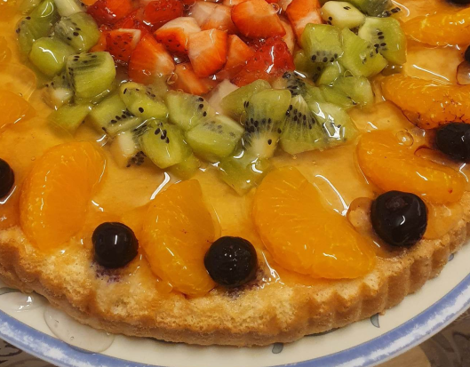

Jelly Cake

Description
Soft Jelly Cake from sponge Dough arranged with Fruit. You can use different types of fruit according to your taste. Forrest fruit goes very well with this cake, but also kiwi and tangerines can be a great choice.
Ingredients
- 200 g of sugar
- 1 dcl of watter
- 4 eggs
- 1 dcl of oil
- 200 g of white flour
- 1 package of vanilin sugar
- 1 package of baking soda
Steps
- Mix four egg yolks with granulated sugar and vanilla sugar for a dough.
- Add water and oil and mix it again.
- Sprinkle sifted flour to which we added baking powder.
- Finally, lightly mix in the snow from the four egg whites.
- Bake at 180°C for about half an hour.